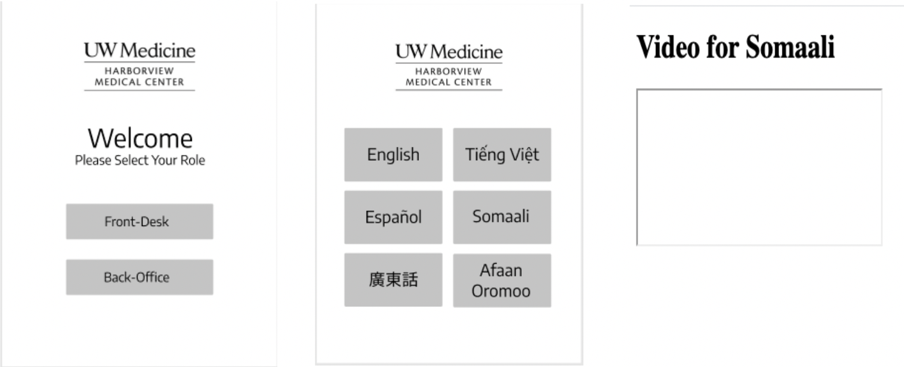

Project Introduction
Welcome! This webpage talks about the Project Breaking The Barriers completed as a Capstone project
by Team Aztech comprising of second-year Masters in Information Management Students from University of
Washington, Seattle done in partnership with the Harborview Medical Center's International Medical Clinic (IMC). Through this project Team Aztech and the medical staff from Harborview Medical Center are trying to
imporve patient experience for Low English Proficiency Patients (LEP) visiting the International medicine Clinic.
After the COVID-19 pandemic struck, the clinic made a priority of speeding up patient intake while limiting contact with staff. The clinic also wanted
to make sure that patients were being asked the full list of COVID-19 screening questions.
So, Harborview turned to the University of Washington’s Information School and thus this project was born.
A woman undergoes COVID-19 testing at IMC, Harborview
The Problem
Over 10,000 patients with Low English Proficiency visit the International Medicine Clinic at Harborview every year for regular checkups and treatments.
These patients are mostly in the age group of 60 and above with limited tech dexterity. Given the current pandemic situation,
the IMC was faced with the challenge of asking their patients screening questions for COVID-19 before checking them in the clininc.
Given the nature of the questions
and the severity of the pandemic, the requirement for active, simple and transparent communication is very high. Besides, the demographics of the visiting patients requires the
clinic to gather information and provide post visit instructions in a total of 7 different languages. These languages are - Amharic, Arabic, Cantonese, Oromo, Somali, Spanish and Vietnamese.
Currently, the staff at IMC asks the screening questions to the visiting patients in the patient's native langauge and at times to facitlitate the conversation,
interpreters speaking the patients native language are called in through a phone or video conferencing. Sometimes this process takes in a lot of time and leads to an inefficient checkin process.
In addition, there is also a lack of informational resources on the Covid-19 screening Process.
A vector graphic representation of a typical patient Check-In process at the IMC
The Solution
Our team's approach revolved around the idea of limiting contact between the receptionist and the patient being checked in. Besides we tried to increase access of educational resources helping the patients in undertanding the COVID-19 testing process and any required post visit instructions. After paying multiple visits to the clinic, understanding the checkin process first hand and conducting regular meetings with the hospital staff we were able to develop the following componenents -
1. Front Office
This component address the patient's interaction with the receptionist. The patient would have access to the web app and would choose the language of their choice from the selection of the above mentioned 7 different languages. After the selection they would be asked a set of COVID-19 screening questions in the language selected which can be responded with a 'yes' or a 'no'. After the responding to all the questions the receptionist would be able to see a copy of the responses and can take an informed decision.
Snippets representing front office component Workflow
2. Back Office
This component address the patient's interaction with the back office staff where they are provided access to informational video resources for COVID-19 screening . Again the patient would be able to the choose the language of their choice from the available set of 7 different languages. Based on their selection, they would be redirected to an instructional video in the patient's chosen language.
Snippets representing back office component Workflow
3. End Product
The end product is a web app that is optimized for a handheld touch based tablet device. The app design was developed after paying multiple visits to the clinic and keeping our end users in mind, specially focussing on creating a web app that is easy to use and has focus on accessibility considerations for people over the age of 60.
Meet The Team
Being non-native English speakers, members of Team Aztech hail from India and understand how difficult it could for people to communicate and express themseleves in a language that they don't predominantly use. Given the current circumstances of the pandemic all four of us got together with the intention of working together to build something that could ease the burden of the pandemic.
Team Aztech members - Aniruddh Nathani, Nandini Mazumdar, Rohan Khurana and Varun Kandukuri (From Left to Right).